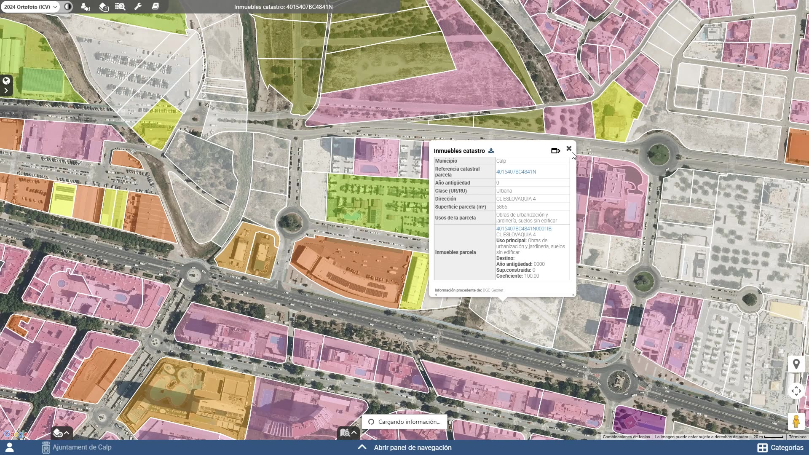
Geonet Territorial S.A.U.
GeoGIS, la plataforma de información geográfica de los ayuntamientos de Alicante
Planeamiento, catastro, redes, callejero, patrimonio e inventario, juntos en un visor hecho para cada municipio. Geonet es la sociedad pública de la Diputación de Alicante y de Suma que lo desarrolla y lo mantiene.
Organismos que ya trabajan con GeoGIS


GeoGIS
El sistema de información geográfica de cada municipio
GeoGIS es un SIG en la web con el que el ayuntamiento gestiona su territorio y abre una ventana de transparencia sobre lo que publica.
-
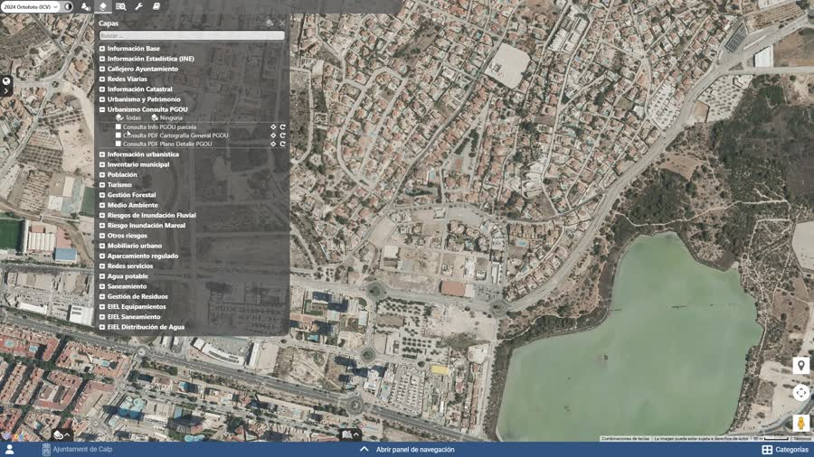
Planeamiento Normativa y parámetros urbanísticos ligados a cada parcela. -
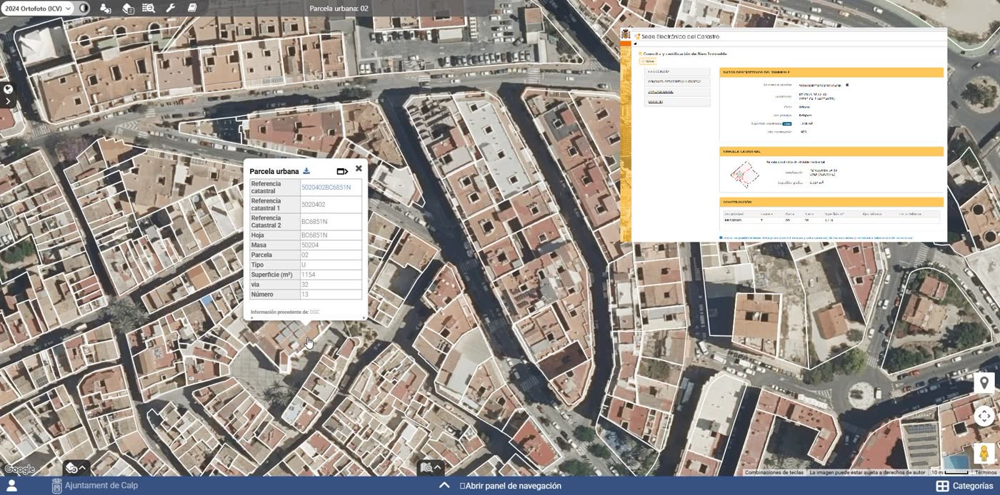
Catastro Cartografía catastral y datos alfanuméricos asociados. -
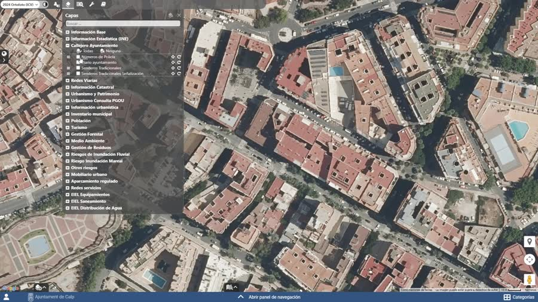
Callejero Viario oficial y números de policía georreferenciados. -
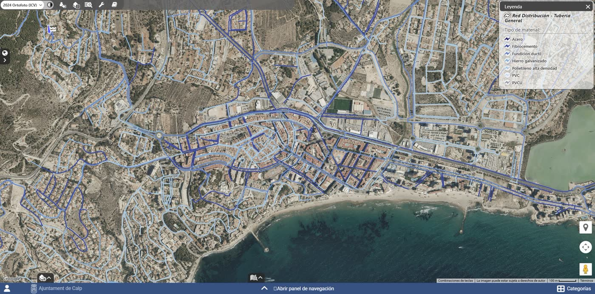
Infraestructuras Redes de abastecimiento, saneamiento y otros servicios. -
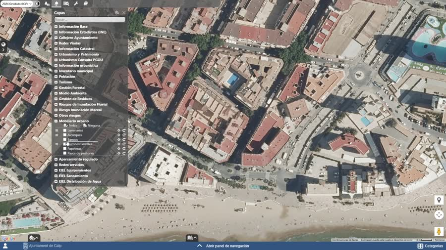
Mobiliario urbano Inventario y mantenimiento de elementos urbanos. -
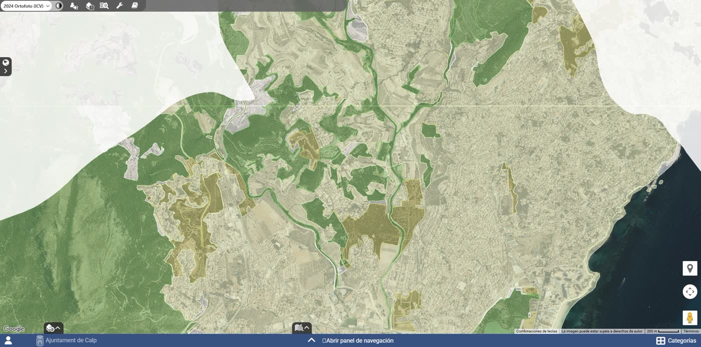
Medio ambiente Protección, ordenación y análisis de riesgos. -
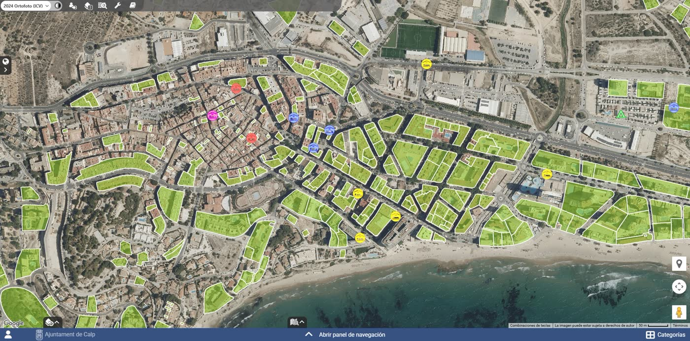
Turismo y patrimonio Puntos de interés, rutas y bienes catalogados. -
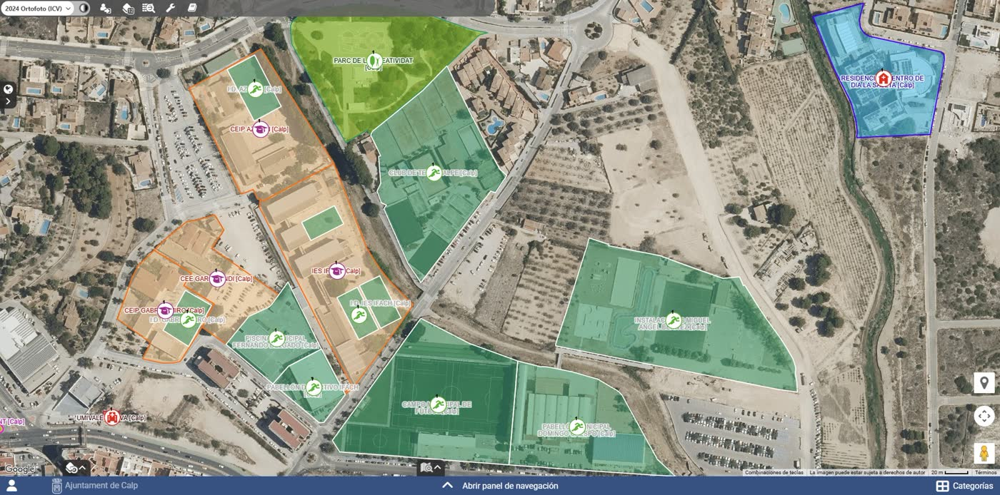
Inventarios Inventario municipal y encuesta de infraestructuras locales.
Sin identificarse se consulta la información publicada: capas de dominio público y las municipales que el ayuntamiento ha abierto. El personal técnico se identifica para ver el resto —borradores, datos sensibles o de uso interno.
Para el ayuntamiento
Cómo implantar GeoGIS en su municipio
Hay dos caminos, según el tamaño del municipio.
Más de 5.000 habitantes
Convenio de adhesión de la Diputación, con cuatro años de vigencia prorrogables. El ayuntamiento asume los costes de implantación y de mantenimiento.
Tramitar el convenioMenos de 5.000 habitantes
La Diputación pondrá en marcha un plan propio: cada año se implantará GeoGIS en un número de municipios aún por determinar, con cargo a la Diputación.
Qué incluye
En ambos casos el trabajo es el mismo: geoportal a medida en el dominio del ayuntamiento, migración de la información municipal, formación del equipo técnico y soporte.


Geonet
La sociedad pública que desarrolla GeoGIS
Geonet Territorial es una empresa 100 % pública, medio propio de la Diputación Provincial de Alicante y de Suma Gestión Tributaria. Nuestro trabajo es dar a los ayuntamientos un sistema de información geográfica propio: lo desarrollamos, lo implantamos y lo mantenemos.
Cada municipio tiene su geoportal, con sus capas y su imagen. Geonet forma al personal técnico y da soporte. También sostenemos las herramientas de consulta de toda la provincia: visor de capas públicas, callejero y multivisor.
Actualidad
Noticias
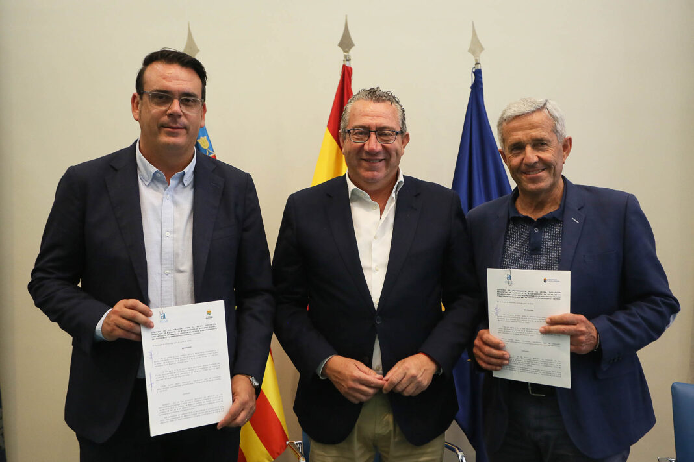
Pilar de la Horadada y Mutxamel se adhieren al convenio marco de GeoGIS
Primeros ayuntamientos que formalizan la adhesión al convenio impulsado por la Diputación de Alicante.
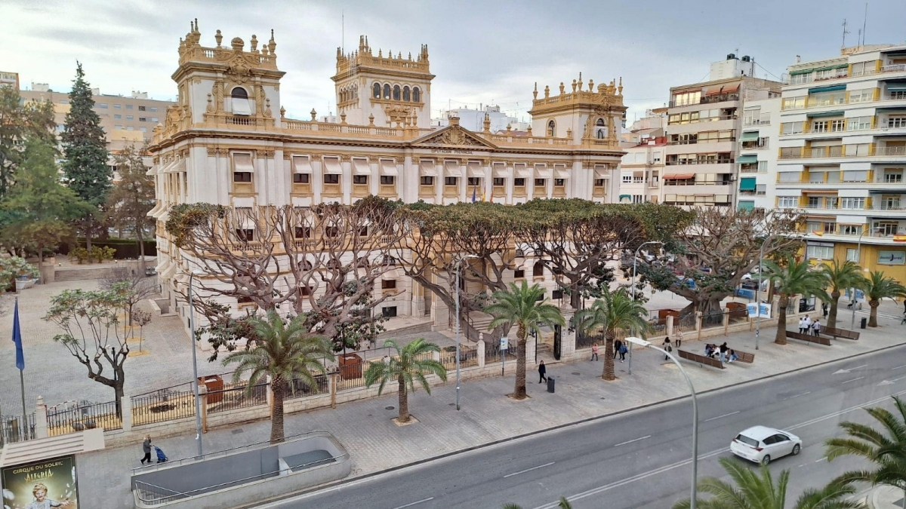
La Diputación impulsa GeoGIS en los municipios
Convenio marco para que los ayuntamientos de Alicante se adhieran a la plataforma.

Orihuela implanta GeoGIS para su gestión técnica
El convenio permite unificar cartografía e inventario en un mismo entorno de trabajo.

Santa Pola incorpora GeoGIS a su gestión territorial
El ayuntamiento suma la plataforma a la administración de su información geográfica.

Calp pone en marcha su geoportal municipal
Consulta de planeamiento, medio ambiente, callejero y servicios urbanos en un visor propio.
Empleo
Únase al equipo
En este momento no hay ningún proceso de selección abierto. Cuando lo haya, se publicará en este apartado.